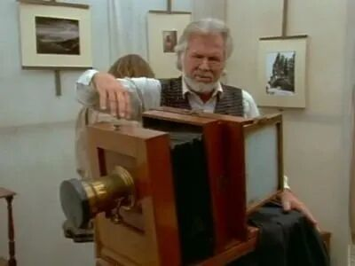
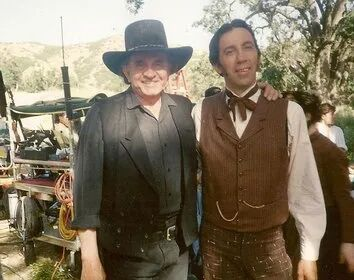
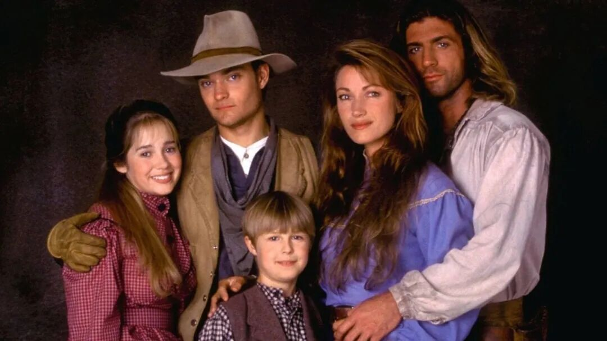

经典美剧《女医生》观剧笔记 4（S1E17）
欢迎点击上方名片关注我。您的支持是我坚持原创的最大动力。
写完第七集，索性再跳一跳——这一篇直接来到第一季的最后一集，S1E17《画像》（Portraits）。一季的收官集多少有点总结陈词的意思，拿来给第一季的观剧笔记收个尾，正合适。
S1E17
一张全家福
这一集来了个大人物。南北战争时期著名的战地摄影师丹尼尔·沃特金斯（Daniel Watkins）赶着他的摄影马车来到科罗拉多泉镇，打算给这一带拍些照片，由Sully给他做帮手。战争年代他跟着军队跑遍了战场，镜头里留下过无数年轻的面孔；如今战争结束，他一路向西，拍风景，也拍人。

先说个题外话。饰演沃特金斯的是美国乡村歌手肯尼·罗杰斯，就是唱《The Gambler》的那位。更有意思的是，他本人在现实中就是个认真的摄影爱好者，出过摄影集，所以这一集的选角多少有点本色出演的意思。罗杰斯已于2020年去世，如今再看这一集，也算一种怀念。

沃特金斯提议给小镇拍一张合影，把全镇人聚到一起，留一张“全家福”。提议一出，麻烦就来了：谁有资格站进这张照片里？镇上的体面人觉得，有些人是不配上镜的。在酒馆做事的迈拉算不算镇上的人？黑人铁匠夫妇算不算？成天和印第安人混在一起的Sully又算不算？吵到后来干脆动了手。混战中马匹受惊，摄影马车起火，Sully还被困在火里，险些没出来。等火扑灭，沃特金斯的全套摄影器材已经烧得只剩下一只镜头。
看到这里我有点感慨。一台相机，把小镇平日里藏着掖着的成见全照出来了——某种意义上，这张照片在按下快门之前，就已经拍成了一半。
与此同时，奎恩医生给沃特金斯查出了糖尿病。她把话说得很明白：这个病会一点点毁掉他的眼睛，直到失明。沃特金斯听完却不打算治——或者说，不打算按奎恩医生说的那样停下来静养节食。他要趁眼睛还看得见，把该拍的照片都拍完。奎恩医生又气又无奈，却拿他一点办法都没有。
这段我很能理解奎恩医生的挫败。在胰岛素被发现之前半个世纪，糖尿病基本无药可治，医生能开的“药方”无非节食和静养。对一个靠眼睛吃饭的人来说，停下来等失明，和继续拍到失明，是两种活法。他选了后者。
器材烧了，合影眼看要黄。但小镇人接下来的举动出人意料：大家一起动手，照着沃特金斯的指点，用木料配上那只抢救出来的镜头，硬是攒出了一台新相机。先前为了“谁配上镜”打得不可开交的人，这会儿一起锯木头、钉箱子、调镜头。赶在沃特金斯的视力彻底衰退之前，全镇人终于站到了一起，拍下了这张来之不易的合影。杂货店老板洛伦起初死活不肯入镜，是奎恩医生转述了沃特金斯的一句话打动了他：每张照片都有它的心脏，而你，就是这个镇子的心脏。照片里，Sully站到了奎恩医生一家这边，轻轻揽住了她的肩膀——第一季的感情线，就在这一揽里不声不响地往前走了一步。

这一集还有一条副线。电报员霍勒斯把病重的母亲接到了镇上，老人已经时日无多。她一直反对儿子娶“那种女人”，霍勒斯起初没敢让迈拉在母亲面前露面，后来还是正式把她带到了母亲床前，迈拉之后又单独去看望了老人一次。临终前，老人给了这桩婚事她的祝福，然后安然离世。
这条副线很容易让人想起第三集里奎恩医生的母亲——同样是抱着成见来的长辈，同样是在亲眼看到之后松了口。这部剧似乎很喜欢写这个：成见这东西，往往败给亲眼所见。
最后还有一个一闪而过的细节。奎恩医生翻看沃特金斯带来的战争老照片，在其中一张上面，她好像看到了一个熟悉的身影——她那位据说已经死在内战战场上的未婚夫，大卫·刘易斯。只是一晃而过，她自己也不敢确认。第一季的故事，就在这一眼和满腹疑问里收了尾。
说几句结尾的感想。
这一集的英文名叫Portraits，画像。妙就妙在它不止一张画像：沃特金斯拍下的是小镇的合影，而编剧用这一集，给整个第一季的小镇众生也画了一张像。谁排斥谁，谁成全谁，谁在关键时刻肯伸手，全在一场吵架和一场大火里现了形。照片最后能拍成，靠的不是相机——那些人先在镜头外面成了一个整体，然后才走进镜头里面。这大概也是第一季真正想讲的事：奎恩医生治好的从来不只是病人，还有这个一开始处处排斥她的小镇。
沃特金斯这个人物也值得多说一句。他让我想起真实历史上的南北战争摄影师马修·布雷迪，当年最有名的战地摄影师，后来也毁于视力衰退，许多工作只能交给助手去完成。靠眼睛谋生的人，最怕的就是世界在眼前一点点暗下去。沃特金斯的选择在医生看来是不听话，在我看来倒很体面：趁着还能看见，把想留下的东西都留下来。照片这东西，本来就是跟遗忘抢时间。
至于奎恩医生在老照片里瞥见的那一眼，是编剧埋得极好的一根线。第一季用一张“留住现在”的合影收尾，又用一张“带回过去”的照片把悬念留给了第二季。她刚刚在这个小镇扎下根，过去却可能并没有放过她。那一眼到底是不是大卫，故事还长，慢慢往下看吧。
往期精彩文章：